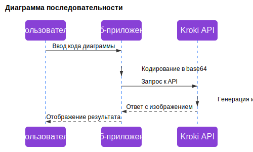
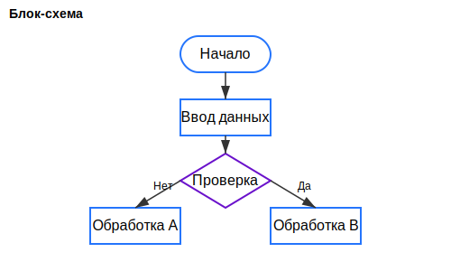
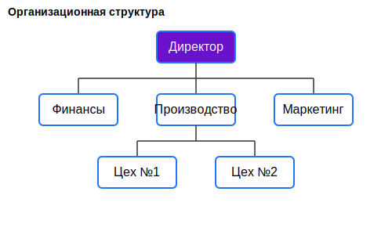

Создавайте красивые диаграммы с помощью Kroki API
Простой и удобный инструмент для визуализации диаграмм различных типов
Возможности сервиса
Множество типов диаграмм
PlantUML, Mermaid, GraphViz, BPMN и многие другие
Простой синтаксис
Создавайте сложные диаграммы с помощью простого текстового описания
Экспорт в разных форматах
SVG, PNG, JPEG и PDF для ваших презентаций и документации
Удобное совместное использование
Делитесь своими диаграммами с коллегами и друзьями
Примеры диаграмм
Взгляните на некоторые примеры диаграмм, которые вы можете создать с помощью Kroki API
Диаграмма последовательности

Блок-схема

Организационная структура

Готовы создать свою первую диаграмму?
Перейдите в редактор и начните прямо сейчас!
Перейти к редактору